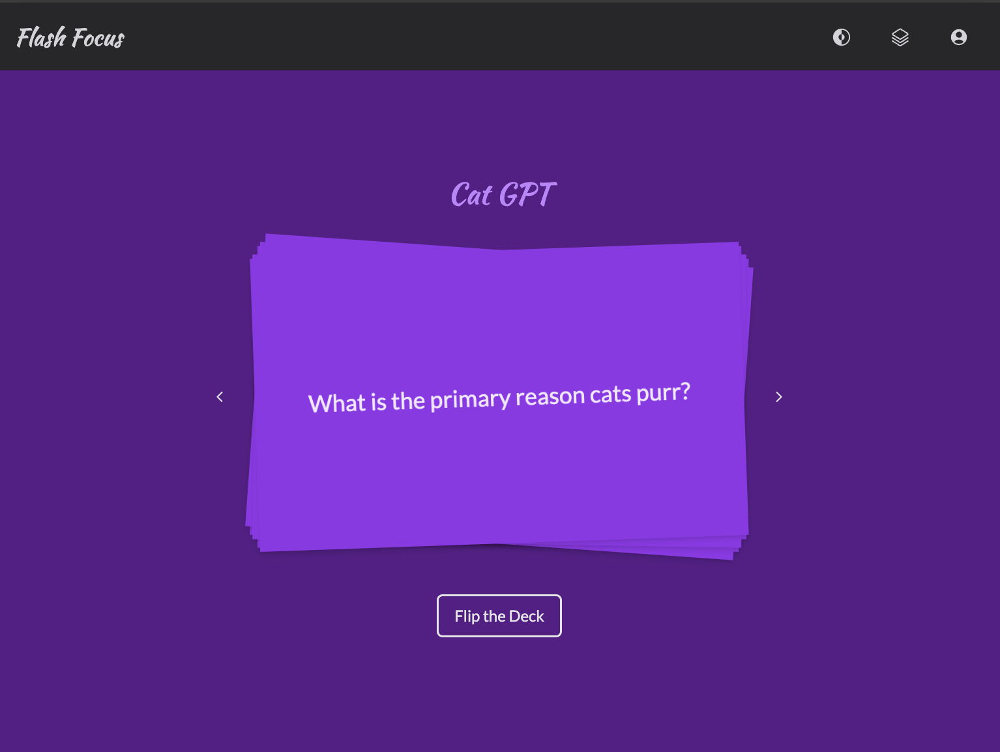

FLASH FOCUS
Flash Focus is an app for creating and studying flash cards. For this project, I sharpened my skills in seamlessly connecting a database to the front end, implementing authentication, and executing CRUD operations.
Features
- User Authentication: Secure login and signup using Firebase Authentication.
- Deck Management: Create, edit, and delete flashcard decks.
- Flexible Navigation: Move between cards with button clicks, swiping, or keyboard shortcuts.
- Dark and Light Mode: Switch between themes to match your preferred visual setting.
- Responsive Design: Fully optimized for desktop, tablet, and mobile devices.
Technology
- Front End: React, Vite
- Styling: TailwindCSS
- Authentication: Firebase Authentication
- Back End: Firestore Database
- Deployment: Heroku
